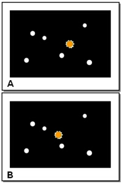
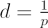

Measuring distances to objects within our Galaxy is not always a straightforward task – we cannot simply stretch out a measuring tape between two objects and read off the distance. Instead, a number of techniques have been developed that enable us to measure distances to stars without needing to leave the Solar System. One such method is trigonometric parallax, which depends on the apparent motion of nearby stars compared to more distant stars, using observations made six months apart.
A nearby object viewed from two different positions will appear to move with respect to a more distant background. This change is called parallax. A simple demonstration is to hold your finger up in front of your face and look at it with your left eye closed and then your right eye. The position of your finger will appear move compared to more distant objects.
By measuring the amount of the shift of the object’s position (relative to a fixed background, such as the very distant stars) with observations made from the ends of a known baseline, the distance to the object can be calculated.
A conveniently long baseline for measuring the parallax of stars (stellar parallax) is the diameter of the Earth’s orbit, where observations are made 6 months apart. The definition of the parallax angle may be determined from the diagram below:

If the parallax angle, p, is measured in arcseconds (arcsec), then the distance to the star, d in parsecs (pc) is given by:

It is important to note that in this example we assume that both the Sun and star are not moving with a transverse velocity with respect to each other. If they were this would complicate the picture as presented here. In practice stars with significant proper motions require at least three epochs of observation to accurately separate their proper motions from their parallax. Stars that are members of binaries further complicate the picture.
The only star with a parallax greater than 1 arcsec as seen from the Earth is the Sun – all other known stars are at distances greater than 1 pc and parallax angles less than 1 arcsec. When measuring the parallax of a star, it is important to account for the star’s proper motion, and the parallax of any of the ‘fixed’ stars used as references.
Over a 4 year period from 1989 to 1993, the Hipparcos Space Astrometry Mission measured the trigonometric parallax of nearly 120,000 stars with an accuracy of 0.002 arcsec. The GAIA mission, to be launched in 2010, will be able to measure parallaxes to an accuracy of 10-6 arcsec, allowing distances to be determined for more than 200 million stars.